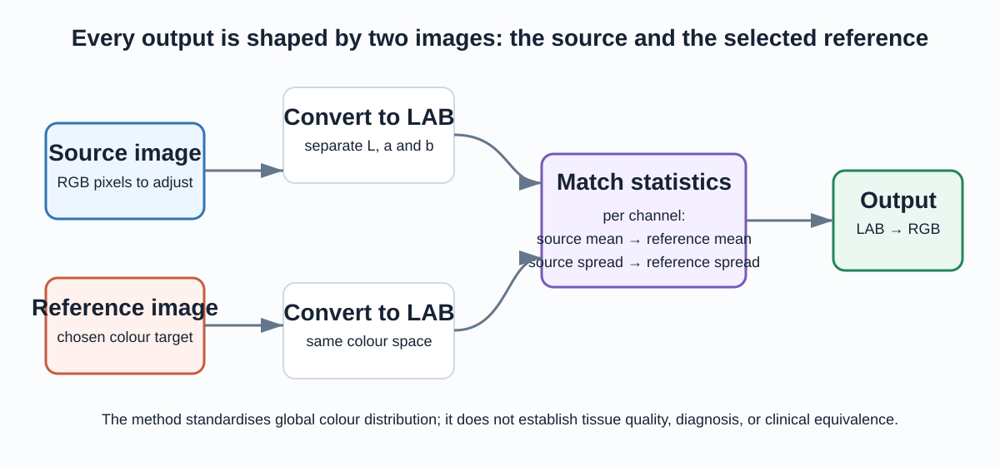
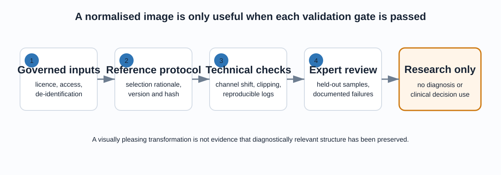

The problem in one sentence
Colour in a histology image can vary because of stain batch, slide preparation, scanner, or illumination. This project makes that colour variation explicit: it moves a source image’s global LAB colour distribution towards a chosen reference image without pretending to establish biological or clinical equivalence.
How the transformation works

The reference is not a passive input: it sets the target colour distribution for every output image.
LAB is useful because it exposes a lightness-like channel (L) alongside two opponent-colour channels (a and b). The implementation transforms each channel independently, then converts the combined result back to displayable RGB.
The mathematical rule
For each LAB channel, the source is centred, rescaled to the reference spread, and shifted to the reference mean.
Remove the source channel’s average colour.
Align variation with the reference channel.
Place the result at the reference mean.
Use ε to handle a zero-variation channel safely.
Reference selection is a model decision
The selected reference slide defines what “normalised” looks like. A credible protocol records why it was chosen, its stain and scanner context, tissue type, reviewer approval, version, and file hash. It must also be chosen without leaking information from a future evaluation set.
A different reference should produce a different output. The software tests verify that property on synthetic colour patches; that proves the implementation responds to its inputs, not that any particular reference is medically appropriate.
Run the supported code path
The project includes a portable NumPy implementation in src/color_normalization.py. It takes H × W × 3 uint8 arrays in RGB order and rejects ambiguous formats rather than guessing.
What is tested—and what is not
| Verified by tests | Still requires a study |
|---|---|
| Output shape, RGB dtype and 0–255 range are preserved. | Whether transformed images retain relevant histological information. |
| A changed reference changes the output distribution. | Whether a chosen reference is representative or suitable. |
| Uniform source channels cannot divide by zero. | Whether normalisation improves a downstream research task. |
Validation gates before any research claim

Each gate answers a different question. Passing software tests is necessary, but it is only one gate.
A sound evaluation locks acceptance criteria before looking at results, splits at patient/case and site level, measures channel shift and clipping, includes expert review of held-out examples, and compares against an unnormalised baseline. PSNR and SSIM are not default success metrics: normalisation intentionally changes pixels instead of reconstructing a known target.
Data and safe use
Local image filenames suggest pathology-related material, but filenames cannot prove provenance, licence, consent, diagnosis, or ground truth. Treat the bundled assets as local demonstration material until those records are established. An authorised study should keep data access-controlled, maintain a manifest, and retain source/reference/output hashes for every run.
The historical notebooks and Colab export are retained as provenance of the project’s exploration. The supported implementation and this walkthrough are the recommended entry points.